Projects
18 projects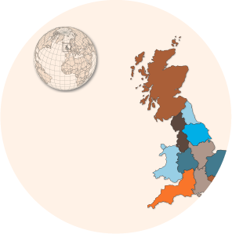
Polaris Lab UK
Web-based GIS project showcasing interactive mapping capabilities.
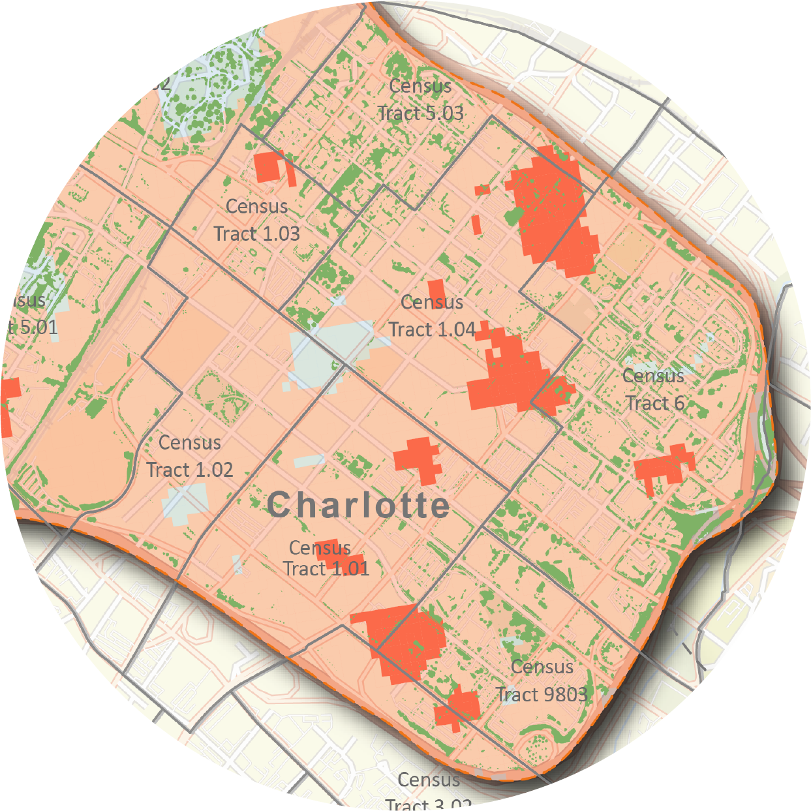
Project Vruksh - Tree Canopy vs Urban Heat
Large-scale land cover classification analyzing tree canopy and urban surface heat relationships.
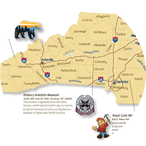
North Carolina Historic Regions
Cartographic visualization of North Carolina's diverse geographic and cultural landscape.
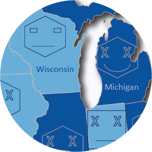
USA Army Dominance - Veterans Analysis
Demographic spatial analysis of U.S. veterans using Chernoff bivariate mapping.
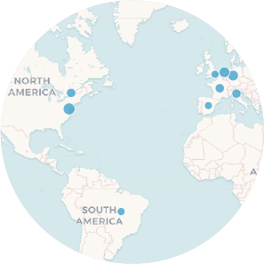
GDP Evolution - Interactive Map
Interactive Leaflet.js visualization tracking global GDP changes over time.
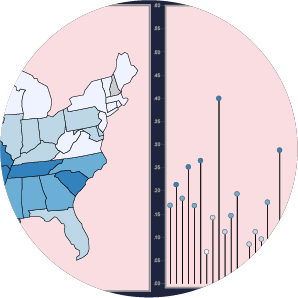
Crime Rate Analysis in USA
D3.js powered crime rate visualization and spatial pattern analysis.
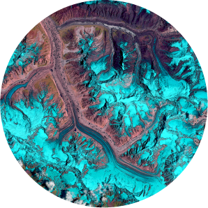
Gangothri Glacier Change Analysis
30-year satellite data analysis tracking glacier retreat in the Himalayas.
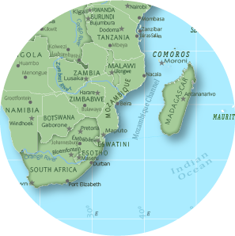
Africa Political Continent Map
Detailed political map of Africa with national boundaries and geographic features.
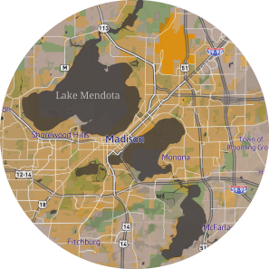
Redesign of Earth BaseMap
Custom-designed Earth basemap using Mapbox Studio inspired by the movie Saaho.

Central Wisconsin Farmers Market
Web app for farmers markets, SNAP stores, and community demographics in Wisconsin.
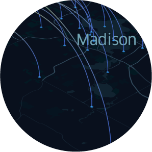
Dane County COVID-19 Analysis
Human mobility and travel flow pattern visualization during the pandemic.
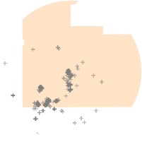
Flickr Photo Distribution - Disney World
Geospatial analysis of geotagged photos using Flickr API and K-means clustering.
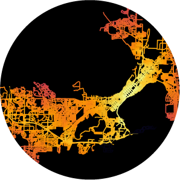
Madison Network Analysis
Urban road network centrality analysis using OSMnx and NetworkX.
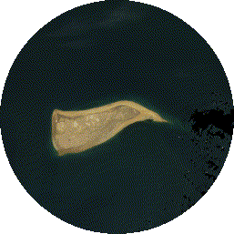
Land Use Land Cover Change
Google Earth Engine analysis of land cover changes with Landsat timelapse.
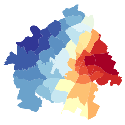
Spatial Autocorrelation & GWR Analysis
Moran's I and Geographic Weighted Regression analysis using PySAL.
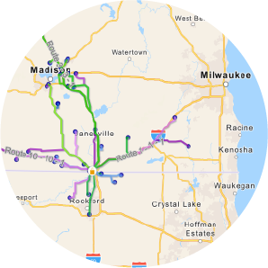
Beloit Farmers Market Network
Spatial relationship analysis between farmer locations and the Beloit market.
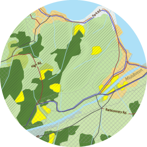
Suitable Site Selection
GIS-based site selection using overlay analysis and weighted scoring.
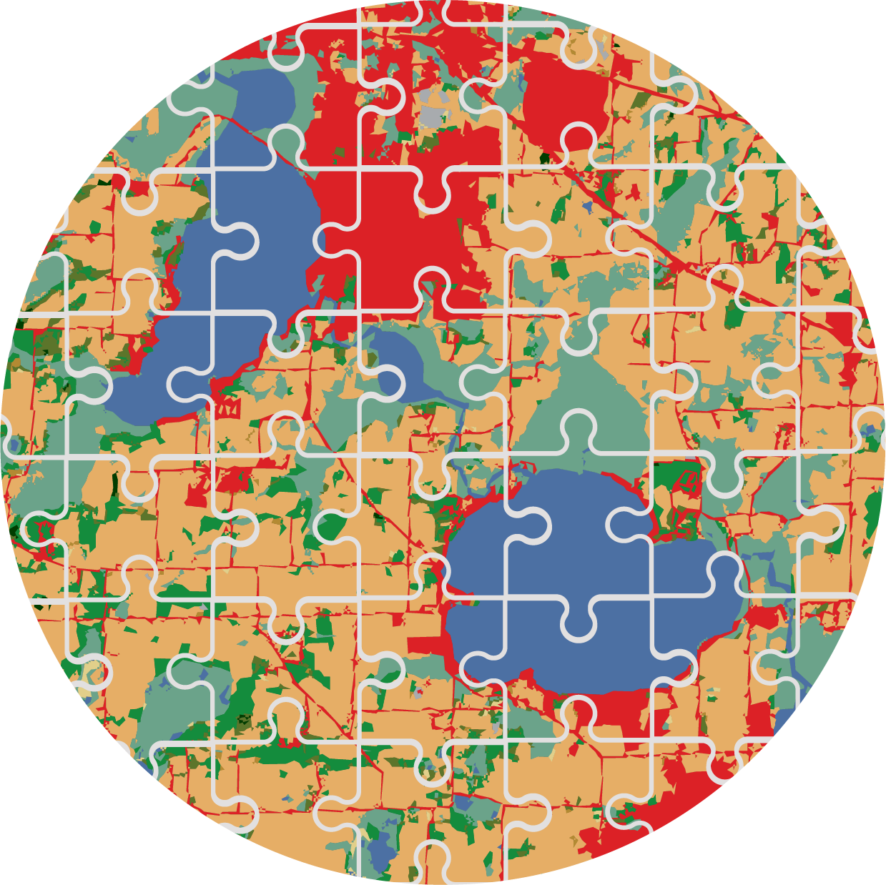
Dane County Puzzle Map
Creative puzzle-style cartographic design of Dane County, Wisconsin.